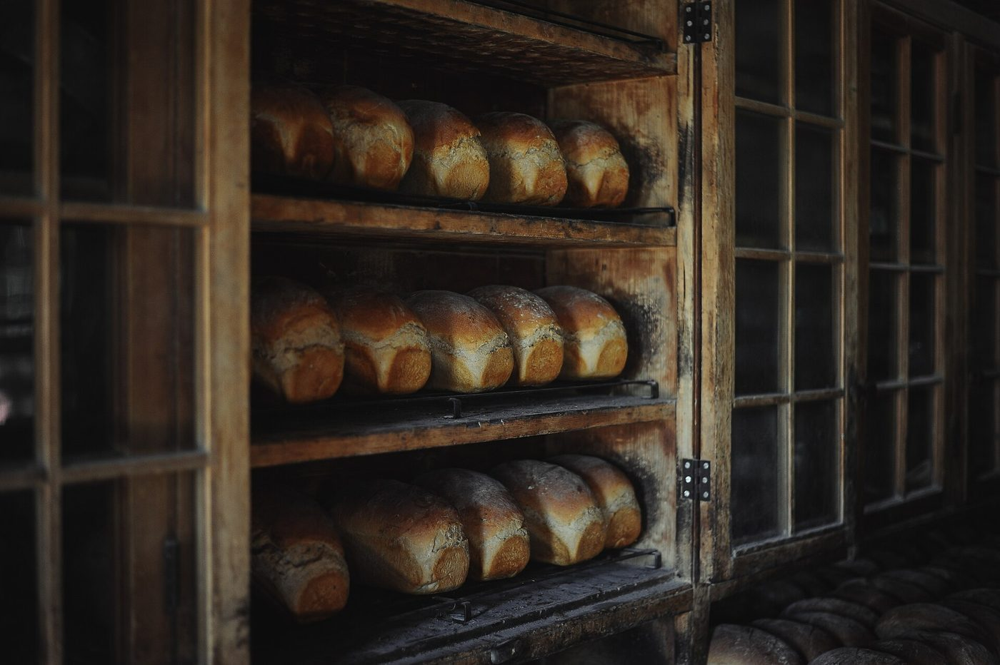
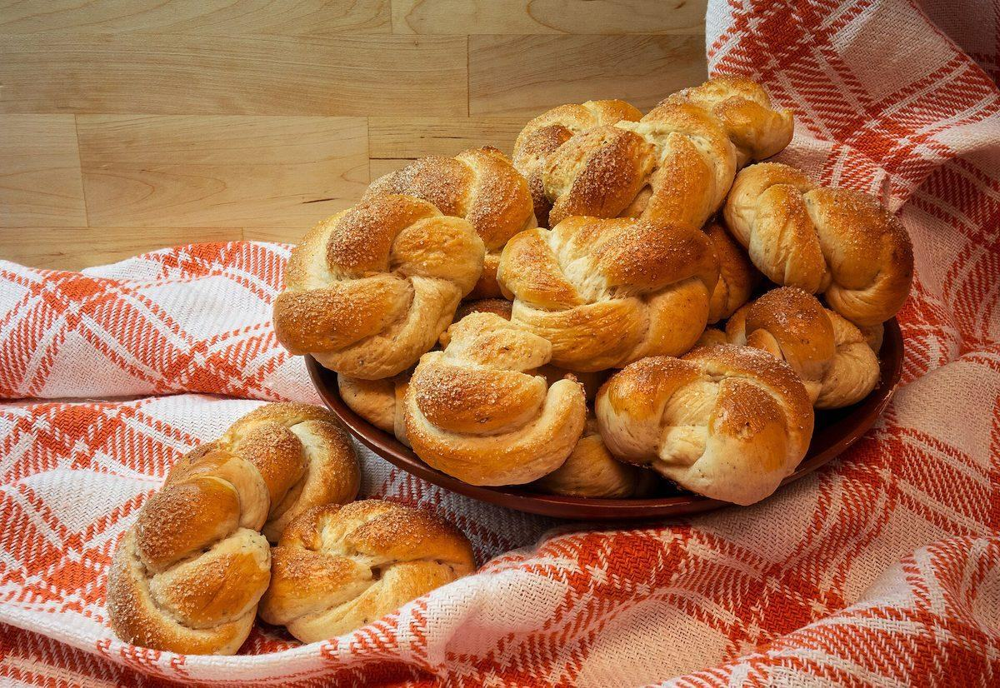

制作側の連想
刷毛の部位を、配置図にしてみる
このサイトは、ペンキ塗りに使う刷毛を図にしたつもりで作りました。六つの部位に番号をふり、上の図と並べています。制作側の連想で、お店の理念・由来とは無関係です。実際の刷毛の仕様を示すものでもありません。
凡例
六つの部位
- 1毛先塗料をふくませて、面にあてる先の部分。
- 2毛元毛を束ねて、口金のなかに差し込んである根元。
- 3口金毛の根元を包み、柄へつなぐ金属の筒。
- 4留め釘口金を柄に留めておく、小さな釘。
- 5柄手で握る、木の持ち手。
- 6吊り穴柄の端にあけた、掛けておくための穴。
ギャラリー(イメージ)
パンとコーヒー豆の写真





写真はパンとコーヒー豆のイメージです。お店のものではなく、お店で提供している商品を示すものでもありません。
ご案内
お店のこと(確認できたものだけ)
| 所在地 | 〒861-1364 熊本県菊池市七城町辺田389 |
|---|---|
| 電話 | 準備中 |
| 営業時間 | 準備中 |
| 定休日 | 準備中 |
| ご予約 | 準備中 |
| 駐車場 | 準備中 |
| SNS | Instagram @konatsumugi_ |